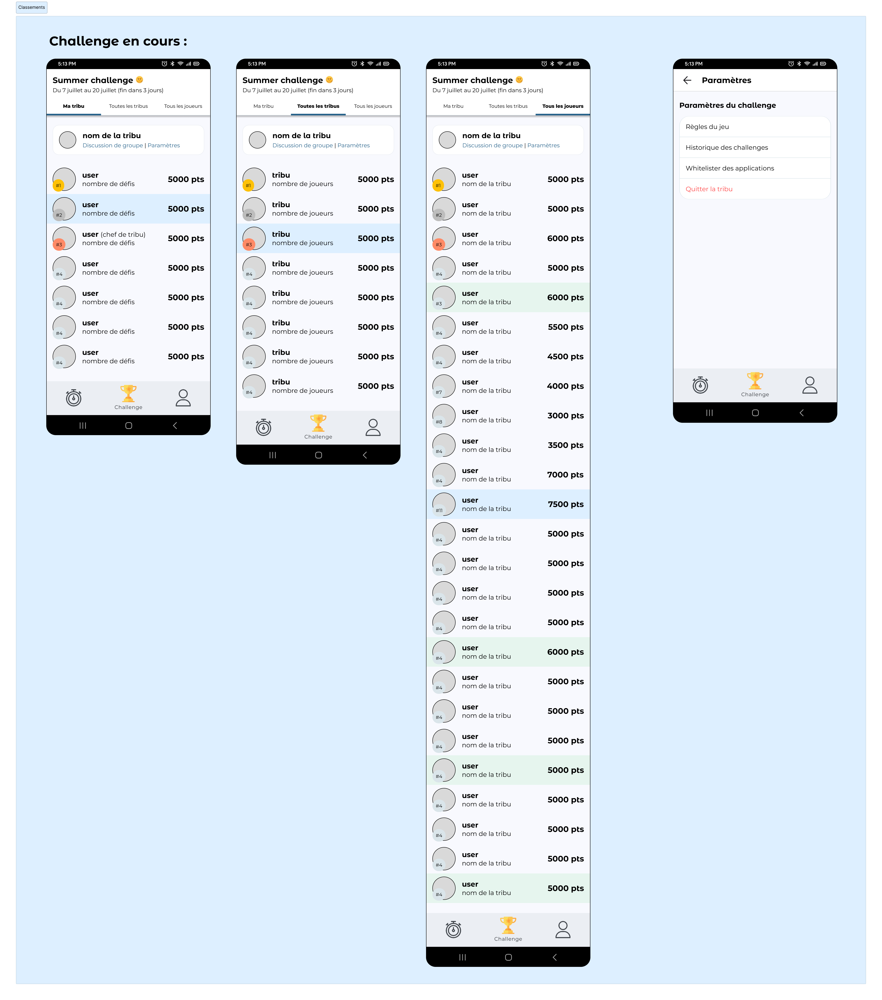

Inouk Challenge
Identification de pain points et refonte d'une application mobile.
Catégorie : Projet associatif
Période : Juillet 2025
Format : Mobile
INOUK est une jeune association dont la mission est de transformer le temps passé sur son écran en temps disponible pour se reconnecter à ce qui nous entoure, aux autres et à soi, à travers un challenge en équipe et des défis déconnectés.
J’ai intégré l’association en juin 2025 en tant que UX/UI Designer bénévole alors que la V3 de l’application était déjà quasiment prête à être déployée et testée auprès d’utilisateurs sur une période de deux semaines. Entre tests utlisateurs, retours spontanés et formulaire de satisfaction, j’ai pu identifier les irritants et les besoins des utilisateurs et trouver des solutions à implémenter pour la V4 de l’application, prévue sur Google Play et l’Apple Store à la rentrée 2025 :
Premier lancement de l'application

| Problème identifié | Verbatim | Opportunité d'amélioration UX |
|---|---|---|
| Manque d'un onboarding, les utilisateurs qui découvrent l'application pour la première fois sont livrés à eux-mêmes | "ça manque d'un écran introductif (...) Là on arrive directement sur le calendrier on comprend pas trop" (retour spontané) | Intégrer un onboarding à l’installation de l’appli pour présenter : le challenge (tribus), les défis, le suivi perso et le système de ligue. |
Maquettes V4 :
 V4.png)
Importation des données + Suivi perso & Ligue

| Ecran/th> | Problème identifié | Verbatim | Opportunité d'amélioration UX |
|---|---|---|---|
| Importation des données | La pop-up "ACTION REQUISE - Tu as X jours à importer" porte à confusion, son utilité est floue | "C'est pas très clair ce que ça fait "Importer"" ; "Tu cliques [sur "Importer"] mais il te dit rien, même pas si ça a fonctionné" (retour spontané) |
|
| Suivi perso (calendrier) | Le code couleur du calendrier pose un problème d'accessibilité | "ça [jaune et orange] c'est les mêmes couleurs" | Travailler sur une palette de couleurs plus contrastée. |
| Ligue | Les utilisateurs ne comprennent pas le fonctionnement des ligues | “Pourquoi j’ai perdu des vies ?” |
|
Maquettes V4 :
 + Ligue.png)
Challenge (pré-challenge)
.png)
| Problème identifié | Verbatim | Opportunité d'amélioration UX |
|---|---|---|
| Les utilisateurs qui créent un compte sur l’application ne s’inscrivent pas au challenge | “J'ai pas compris, faut créer une tribu ?” |
|
| Message d'erreur "Assurez-vous que ce champ comporte au plus 20 caractères" à la création d'une tribu alors que l'utilisateur a entré un nom de tribu comportant strictement 20 caractères | [problème remonté par une utilisatrice] |
(maquette à venir) |
| La consigne concernant l'ajout d'un lien de discussion (pour les chefs de tribu) n'est pas claire | “Je comprends pas ce qu'il faut faire pour le lien de discussion" | A mieux compris après lui avoir proposé l'explication suivante : "Créé ou reprends une conversation de groupe sur l'application de messagerie de ton choix (WhatsApp, Messenger, Discord...) et ajoute le lien ici pour faciliter les échanges entre les membres de ta tribu" ("Je trouve ça mieux, le but est plus clair") (maquette à venir) |
Maquettes V4 :
(1).png)
Challenge (Classements)

| Problème identifié | Verbatim | Opportunité d'amélioration UX |
|---|---|---|
| Le nombre de points (des autres utilisateurs) est abstrait pour l'utilisateur car pas de moyen de le traduire en temps d'écran | "Mon père a 1890 pts" "C'est bien ? Ça correspond à quoi ?" "🤷♀️" (échange spontané) | Voir le nombre de jours importés par chaque utilisateur depuis le début du challenge (1890 pts sur combien de jour ?) (maquette à venir) |
| Le chef de tribu n'est pas reconnaissable par les autres membres de la tribu, à part si ça a été discuté en dehors de l'appli | "C'est qui le chef ?" | Ajouter un tag ou autre pour indiquer qui est le chef de la tribu dans la vue "Ma tribu” |
Maquettes V4 :
Challenge (Défis)

| Problème identifié | Verbatim | Opportunité d'amélioration UX |
|---|---|---|
| L'onglet "Défis" n'est pas assez visible | "(râle) Je galère toujours à retrouver la page des défis" | Créer un onglet "Défis" dédié dans la barre de navigation du bas (maquette à venir) |
| Liste des défis dense et difficile à parcourir | "la liste des défis je trouve ça pas ouf, il faudrait les catégoriser pour avoir un 1er niveau de tri" | Catégoriser les défis (défis sportifs, défis culturels, défis créatifs…) + permettre à l’utilisateur de filtrer les défis par catégorie et temps de réalisation |
| A la fin du challenge, les utilisateurs n’ont pas compris que le challenge était terminé (et n’ont donc pas compris pourquoi les points ont arrêté d’être comptabilisé) | “ça fait plusieurs jours que je ne marque plus de points je sais pas pourquoi” | Annoncer plus clairement la fin du challenge (maquette à venir) |
Maquettes V4 :

Général
| Problème identifié | Verbatim | Opportunité d'amélioration UX |
|---|---|---|
| Utilisation du téléphone obligatoire dans certains cas, perte de points injuste | “Je vais exploser mon score Inouk" [en conduisant 6h avec le GPS]” | Permettre de whitelister certaines applications |
| UI terne et désuète | “le gris partout là bof, ça fait terne” | Modernisation de l’UI, remplacer le gris par du blanc, aérer davantage |
- Design System à venir -
- Mesure de l'impact UX à venir en octobre 2025 -